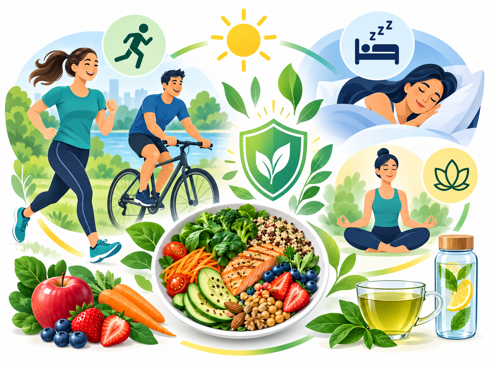
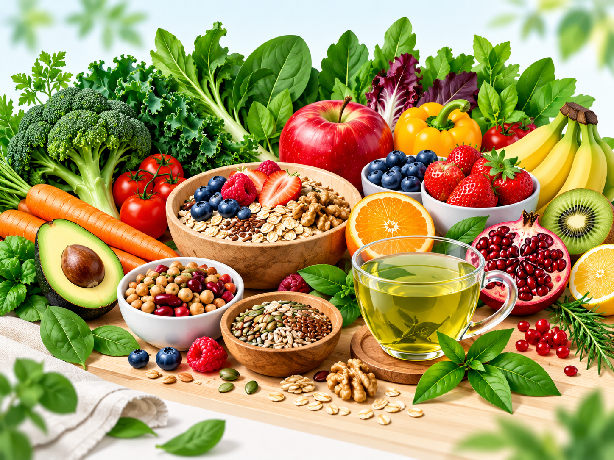

Kiinan ravitsemustieteen käytännöllinen ydin
Tässä näkökulmassa kiinalainen ravitsemustiede tarkoittaa Kiinan virallisia ravitsemussuosituksia ja kiinalaisilla väestöillä tehtyä ravitsemusepidemiologiaa. Chinese Dietary Guidelines 2022 korostaa monipuolista ja tasapainoista ruokavaliota, aktiivisuutta, terveellistä painoa, runsaasti vihanneksia ja hedelmiä, täysjyvää ja soijaa sekä kohtuullisesti kalaa, siipikarjaa, kananmunia ja vähärasvaista lihaa.

Monipuolisuus
Laaja ruokavalikoima vähentää riskiä, että ravinto rakentuu vain muutaman ruoan ja ravintoaineen varaan.
Kasvit + proteiini
Kasvikset, hedelmät, täysjyvä ja soija yhdistyvät laadukkaisiin proteiinilähteisiin. Tämä sopii myös harjoittelevan ihmisen perusmalliksi.
Aktiivinen arki
Suositukset yhdistävät ruokavalion ja liikkumisen samaan kokonaisuuteen terveellisen painon ja kroonisten sairauksien ehkäisyn tueksi.
Fitness-lautanen
Harjoittelevan ihmisen ateria voidaan rakentaa yksinkertaisesti kolmen osan ympärille.
Miksi pitkäaikainen tulehduskuorma kiinnostaa?
Krooninen matala-asteinen tulehdus liittyy ikääntymisen biologisiin muutoksiin ja useisiin sairauksiin. Liikuntaharjoittelu parantaa monia tulehdus- ja aineenvaihduntamittareita etenkin pitkällä aikavälillä. Harjoituksen aiheuttamaa normaalia, lyhytaikaista korjausreaktiota ei kuitenkaan pidä yrittää kokonaan estää.
Ruoan bioaktiiviset yhdisteet: mitä näyttö oikeasti kertoo?
| Yhdiste | Ruokalähteitä | Tutkimussuunta | Näytön tulkinta |
|---|---|---|---|
| Fisetiini | mansikka, omena, persimon | senoterapeuttinen tutkimus, tulehdus- ja stressireitit | Esikliininen painotus Eläin- ja solututkimus on kiinnostavaa; ihmisillä ei ole vahvistettua näyttöä siitä, että tavallinen ruokamäärä poistaisi senesenttejä soluja. |
| Kversetiini | sipuli, omena, marjat, kapris | senolyyttiset yhdistelmät, flavonoidivaikutukset | Varhainen ihmisnäyttö Pieni D+Q-tutkimus osoitti biomarkkerimuutoksia sairausryhmässä. Tämä ei vastaa kversetiinin käyttöä yksin tai ruokamääränä. |
| EGCG | vihreä tee | oksidatiivinen stressi, solusignalointi, senesenssimallit | Pääosin solu/eläin Ihmisillä vihreän teen terveysvaikutuksia tutkitaan laajasti, mutta kliinistä senesenssin poistovaikutusta ei ole osoitettu. |
| Kurkumiini | kurkuma | tulehdus- ja oksidatiiviset merkkiaineet | Ihmisnäyttöä muista päätepisteistä RCT-meta-analyysissä havaittiin vaikutuksia mm. CRP:hen ja glukoosimittareihin. Tämä ei ole sama asia kuin osoitettu senolyyttinen vaikutus. |
| Apigeniini | persilja, selleri, kamomilla | SASP, SIRT1/NAD+-reitit, tulehdussignalointi | Esikliininen Solu- ja hiiritutkimus on lupaavaa, mutta kliininen ihmisnäyttö senesenssin hoidosta puuttuu. |
| Sulforafaani | parsakaalin idut, parsakaali, muut kaalikasvit | NRF2-redox-signalointi | Mekanistinen ihmisnäyttö Vanhemmilla aikuisilla on tutkittu NRF2-vastetta, mutta sitä ei pidä tulkita todisteeksi senesenttien solujen poistosta. |
| Spermidiini | vehnänalkio, palkokasvit, sienet, täysjyvä | autofagia, immuunisolujen ikääntyminen, terve ikääntyminen | Varhainen kliininen tutkimus Pieniä ihmisillä tehtyjä kokeita on, mutta annos, pitkäaikaishyöty ja kliininen merkitys vaativat lisätutkimusta. |
Vihreä tee ja terve ikääntyminen
Kiinan Multi-Ethnic Cohortin ja UK Biobankin aineistoissa teen käyttö yhdistyi hitaampaan biologisen iän kiihtymiseen biomarkkeripohjaisessa mallissa. Tutkimus on kiinnostava, mutta havainnoiva asetelma ei osoita, että tee itsessään hidastaa ikääntymistä.
Harjoittelu on vahvin käytännön työkalu
- Lihaskuntoharjoittelu auttaa säilyttämään lihasmassaa, voimaa ja toimintakykyä.
- Kestävyysliikunta tukee verenkiertoelimistöä, glukoosiaineenvaihduntaa ja aerobista kapasiteettia.
- Päivittäinen kevyt liike vähentää yhtäjaksoista istumista ja kasvattaa kokonaisaktiivisuutta.
- Riittävä energian ja proteiinin saanti tukee sopeutumista harjoitteluun.
Kokeile käytännössä neljä viikkoa
1. Lisää vaihtelua
Valitse viikkoon useita kasviksia, hedelmiä, palkokasveja, täysjyviä ja proteiinilähteitä. Vaihtelu on helpompi tavoite kuin yhden superruoan etsiminen.
2. Pidä harjoittelu vakaana
Pidä voimaharjoittelu ja aerobinen harjoittelu samankaltaisina koko seurantajakson ajan, jotta olojen muutosta on helpompi tulkita.
3. Seuraa toimintakykyä
Kirjaa uni, vire, treeniteho, palautuminen, nälkä ja ruoansulatus. Muutokset kertovat arjen toimivuudesta, eivät solujen lukumäärästä.
Turvaraja
Väkevöidyt uutteet ja ravintolisät voivat poiketa olennaisesti ruoasta saatavista määristä. Ne voivat vaikuttaa lääkeaineiden metaboliaan, veren hyytymiseen, maksaan tai ruoansulatuskanavaan. Pitkäaikainen suuri annos ei ole automaattisesti tehokkaampi tai turvallisempi.
Tutkimuslähteet
- Chinese Nutrition Society: Chinese Dietary Guidelines (2022).
- Wang X-M. ym. American Journal of Clinical Nutrition (2023): dietary diversity and frailty among older Chinese adults.
- Tea consumption and attenuation of biological aging: longitudinal analysis from Chinese and UK cohorts.
- Fisetin as a senotherapeutic agent: evidence and perspectives for age-related diseases (2024).
- Hickson L.G. ym. EBioMedicine (2019): dasatinib + quercetin pilot study in humans.
- Curcumin on Human Health: systematic review and meta-analysis of 103 randomized trials (2024).
- Apigenin and senescence: mouse and cellular evidence (2025).
- Sulforaphane and exercise-induced NRF2 signaling in older adults (2026).
- Mechanisms of spermidine-induced autophagy and geroprotection, Nature Aging (2022).
- Exercise-induced inflammatory and metabolic adaptations in ageing: meta-analytic compendium (2026).